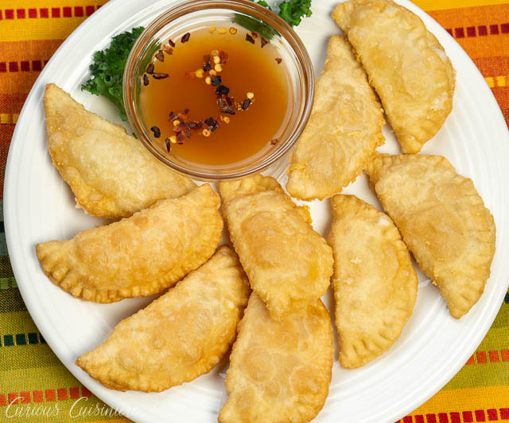

Brazilian Pastel de Queijo

Description
Pastel de queijo are savory Brazilian cheese pastries. This appetizer and street food is something all cheese lovers definitely need to try!
Ingredients
For The Pastel Dough
- 3 ½ - 4 c all-purpose flour
- 1 egg, lightly beaten
- 1 Tbsp salt
- 1 c water
- 2 Tbsp vegetable oil
- 1 tsp white wine vinegar
- Vegetable oil for frying
- 2 Tbsp Cachaça (or white rum or vodka)
For The Cheese Filling
- 8 oz soft and melt-able cheese (mozzarella, cheddar, provolone, etc), sliced or cubed
Steps
For The Pastel Dough
- In a large bowl, mix together 3 ½ c flour and salt. Add the water, egg, oil, vinegar, and alcohol to the flour mixture and mix well.
Once the dough starts to come together, transfer it to a floured surface and knead until the dough is very smooth and elastic (5-7 minutes), adding extra flour as needed to keep the dough from sticking to your hands or the counter.
- Cover the dough with a tea towel and let rest for 30 minutes - 1 hour.
To Make The Pastéis
- Divide the dough in half. Roll out one half as thinly as you can (aim for 1-2 mm thick).
- Using a round cookie cutter (we used a 3 ½ inch cutter), cut circles in the dough.*
- Place a couple cubes of cheese in each round of dough.
- Fold the dough over the filling to create a half circle. Press the edges of the pastel tightly closed using a fork, to seal the filling in. (If you are having trouble getting the edges to seal, or if your dough has set out for a while and started to dry, simply dip your finger in some water and use it to moisten the edges of the dough.)
- Continue rolling out the dough and filling it, until all the dough has been used. Heat a deep skillet (or saucepan) with enough oil to cover the pastéis (roughly 1-2 inches). Heat the oil to around 350F, but not smoking.
- Fry the pastéis until golden and crispy, turning once, being careful not to over-crowd your cooking oil. Frying time will vary depending on how hot your oil is, but it should take from around 1 - 3 minutes a side.
- Transfer the pasteis to a paper towel-lined plate and serve as soon as possible!
*You could also use a knife or pizza cutter to cut the dough into squares or rectangles. And, technically, pastéis can be any size you would like.